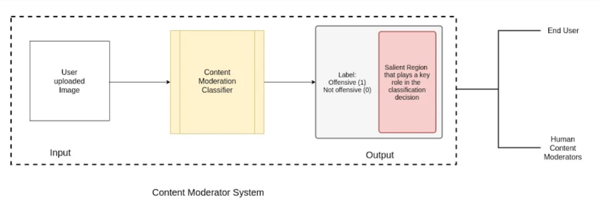

Abstract
One of the biggest challenges faced by social media networks today is content moderation. This becomes a problem when potentially offensive content demonstrating violence, portraying sexually explicit images, advocating the use of weapons, etc are posted. We would like to create a model that can auto-moderate such content.
The main objective of our project is to robustly classify and flag images as offensive or non-offensive. These images can be offensive due to the presence of violence, blood, weapons, sexual or other graphic content. Our model should be able to discriminate between such inappropriate images and other images. The classification decision made by the system should also be explainable to ensure that the system does not harbour any biases such as flagging all images with humans as offensive or tagging all images with red liquids as offensive.
Our initial set of experiments was to build a classifier that could discriminate between offensive and inoffensive images. Using transfer learning with convolutional neural networks, we were able to achieve a 89% accuracy in our task.

Introduction
Since the advent of social media, text, images and videos uploaded by users become visible and accessible to millions of other users. This becomes a problem when potentially offensive content demonstrating violence, portraying sexually explicit images, advocating the use of weapons, etc are posted. While there are human content reviewers, the volume of data produced automatically makes this a problem that needs to be solved at scale and is thus a good candidate to be solved using learning techniques. There are numerous issues with content moderation [2]. One of the main problems encountered with content moderation is that the process is both inconsistent and lacks transparency in terms of why a certain content is flagged. So, any robust automation system should be able to consistently capture the correct contents that need to be flagged and be able to clearly explain the reason for flagging of a certain content. This is important as we would like to be able to scale with ease (automated flagging) and at the same time take care to provide feedback (explainability) to the user uploading the content as well as to potentially any human moderators auditing the moderation results to help prevent cases where images get mislabelled as offensive, to investigate appeals from users, etc. In our system, we will be working with images to classify them as offensive or not while also explaining the reason behind the decision.
System Architecture

Approach
We approach Content Moderation as a binary classification problem with 2 broad categories - offensive images and non-offensive images.
We use Convolutional Neural Networks (CNNs) to perform a supervised binary classification of images into these two categories. Specifically, we perform feature extraction on the images in our dataset using transfer learning from the following pre-trained CNNs to build the binary classifier.
- Alexnet
- Resnet-18
- Inceptionv3
- VGG16
Post this, we use Grad-CAM[1], which is a class-discriminative localization technique to generate visual explanations of the salience regions in the classified images that caused the images to be classified as offensive.
In performing the classification and generating visual explanations, we build what would form the basis (a minimum viable product version) of a content moderation system for offensive images. The system could help end-users / human moderators identify images to be flagged as well as ‘see’ what caused the image to be flagged as offensive. In further experiments, we aim to explore how augmenting an image and/or replacing certain parts of the image with specific offensive/non-offensive content changes the behaviour.
In our approach we had to make several design choices and judgement calls which we have addressed as follows :
- Why are we approaching the problem as a classification problem and proposing the use of CNNs? What about object detection or any other techniques?
We expect that there are latent factors involved in identifying an image as potentially offensive. For instance, in the case of differentiating between images portraying violence and other images, we may not always be able to look for objects (such as knives), or something specific like fire/blood, etc in the scene in a manner that is scalable. Classification of the images using a fine-tuned Convolutional Neural Network will help us identify the nuances involved in flagging the images. With the proposed approach, we should be able to understand and see the reasoning behind the same as well. We believe that such a model is more helpful in a real-world setting where there’s usually a combination of human content-reviewers, rule-based systems and ML systems working together. This could help reduce the gap in understanding the reasons behind the machine’s take on a certain piece of content versus that of a human.
- Why didn’t we formulate the problem as classifying videos, when we have a video dataset available?
It is far more common to have offensive images and we can always sample images from videos. Thus, formulating the problem as image classification has a much wider application scope.
- Of the two transfer learning approaches - fine-tuning and fixed feature extraction, why did we go with the latter?
Since our dataset is relatively small and does not have a variety of unique examples, it is not a good idea to fine-tune the ConvNet due to overfitting concerns. We expect higher-level features in the ConvNet to be relevant to this dataset as well. Hence, we are using the pre-trained network as a feature extractor and retrain the final layer for our classification problem. Thus, we derive predictions by updating only the final layer weights.
- Why did we use these 4 models to train the classifiers?
Our intention is to compare the performance metrics of different classifiers and choose the best one going forward. AlexNet, VGG16, ResNet and InceptionV3 are all landmark ConvNet architectures trained on ImageNet and have proven to demonstrate a high accuracy. These networks have been used for other transfer learning tasks and perform well over a wide range of problems.
- Why did we choose this particular dataset?
This dataset contains a balanced mix of both violent and non-graphic videos from Youtube. The real-life violent content comes majorly from street fights. Apart from the violence videos, there are videos containing regular activities like eating and playing football. We intend to extract frames from each video and treat them as separate, labelled images. This wide range of activities in the dataset would help us make our model robust and take care of corner cases and false positives.
Experiments and Results
Part I: Image Classification
We trained our dataset using the four different classifiers mentioned above, all of them CNN architectures.
We split the data set into 3 sets - train, validation and test. The classifiers are trained using a transfer learning approach where we extract features from pre-trained convnets and modify the final fully-connected layer to suit our data. The transfer learning is performed on a ConvNet pretrained on ImageNet and backprop is done on only the final, modified layer and the weights from the pretrained layers are kept as is. Thus the rest of the ConvNet as a fixed feature extractor for the new dataset.
Details about the data used: (Images are sampled from the videos from [4] via an offline process)
| Type of Data |
Number of Violent Images | Number of Non-Violent Images | Total Number of Images |
|---|---|---|---|
| Training | 8091 | 9409 | 17500 |
| Validation | 1513 | 1506 | 3019 |
| Test | 1506 | 1501 | 3007 |
As per our dataset, a ‘dumb’ classifier (always ‘yes’ or always ‘no’) or a random classifier(randomly classification) would perform classification with an accuracy of close to 50%.
Algorithms used and their parameters
| Parameter | Value used | Motivation |
|---|---|---|
| num_classes | 2 | The images need to be classified as ‘violent’ or ‘non-violent’. |
| batch_size | 4/8 | Batch-size was 8 for Inception, AlexNet and VGG. ResNet used a batch size of 4. The batch sizes was chosen due to computational limitations of the machines we were using. |
| num_epochs | 15 | We used the pre-trained models as feature extractors and were training the last layer for our classification problem. In this case, 15 epochs was sufficient for the models to learn the problem. We were not noticing any changes beyond the first few epochs, so we capped it at 15. |
| learningRate, momentum | 0.001, 0.9 respectively | The learning rate and momentum were set to these values to increase the probability of not getting stuck at a local optima. |
| Image Transforms | Resized Crop and Horizontal Flip | We did this to augment the dataset to be invariant to scale and rotation changes. This captures the variety/variance of real world scenes that will be encountered by the system during the test phase. |
| Validation | We had a validation dataset (that was independent from both the training and the testing data) that was used to determine if the model was overfitting. The best performing model on the validation data for a particular network was used as the final network for testing. |
Results
| Model | Accuracy | Precision | F1 Score | Recall |
|---|---|---|---|---|
| AlexNet | 89% | 90% | 88 | 86% |
| VGG | 92% | 95% | 92 | 89% |
| InceptionV3 | 89% | 92% | 89 | 86% |
| Resnet | 88% | 88% | 88 | 88% |
Part I: Qualitative Results and Trends
True Positives (Violent classified as violent)
As we can see from the examples below, these are images in which violence is very apparent in each frame. Each image has two or more people engaged in a physical fight. The fight is not occluded and therefore, our model is able to classify it accurately.
True Negatives (Non-violent classified as non-violent)
These are examples of different types of non-violent images our model might encounter in the real world. Scenes from movies and news clips. People are engaged in a conversation or cheering for their favourite sports teams. This proves that our model does not simply classify images with people in close proximity as violent and thus proves that the model has learned useful characteristics in differentiating violent and non-violent images.
False Negatives (Violent classified as non-violent)
There were two major categories within the set of false negative images.
- Since we extracted frames from a video, there are certain images which are non-violent but have been labelled as ‘violent’ in the ground truth. These images increase the false negative rate in our model. One of the post-processing steps that we could consider would be to use a majority voting decision for all frames of the video, for our particular dataset.
 |
|
- Another category of false negatives arise from the presence of occlusions or when images in themselves are not violent but as a succession of images demonstrates a violent intention.
For example, in the first row of images, due to occlusion and blurring the model is unable to identify it as a violent image. The second row shows cases of violence where a particular image in itself may not contain enough characteristics to be called as violent but it is true that the series of images demonstrates violence or that there is potential violence that could follow (for eg., based on the setting in the image on the bottom right, we might be able to extrapolate that there was violence demonstrated at some later point in time)
False Positives ( Non violent classified as violent)
We noticed a few interesting set of cases for false positive images.
In the first row, we suspect that the presence of a crowd in the left-most image is leading to it being classified as violent. Similarly, the positioning of the players in the right-most image seem similar to the common setting in most violent scenes.
The images in the bottom row were interesting candidates of false positives. We would need to analyze the salient regions using grad-cam visualizations in phase 2 to see what aspect of the image could be causing the misclassification. These are the kind of incorrect classifications which could be easily overturned by a human moderator (or for users, help them understand better and raise an appeal to overturn moderation decisions) if they were able to see what regions were contributing to the misclassification. Further, we believe this should help us train the model better by providing better examples that allow the model to learn better.
Part II: Implementing Grad-CAM
Concluding the classification experiment, we decided to use the VGG network for the rest of the work as it performed the best out of the 4 architectures. The model which is now fine-tuned to the violence dataset, can be loaded to perform additional computation to identify the region of interest in the flagged images. After loading the network, we prepare the dataset on which we want to test our output. To generate the Gradient-weighted class activation mapping, we find the gradient of the penultimate layer with respect to the activations of the most probable class, which was obtained by forward propagating the image through the network. We finally compute a heatmap which is of the size of the activation maps in the last convolutional layer of the network. This heatmap is reshaped to the size of the input image and superimposed to give the final output.
Part II: Qualitative Results and trends
Examples where grad-cam performs well and helps capture salient regions correctly:
The below examples are instances where our model works well in localizing the salient regions. The violent part of the image is where the heatmap has higher value and causing the images to be classified as violent. It can be inferred from this, that our model has been able to correlate high level features like human contact and facial expressions with the act of violence. Additionally, it can be observed that the model is able to distinguish between general crowd from an actual brawl.
| Input Image (Class: Violent) | Grad-CAM output |
|---|---|
 |
|
In the following sequence of images, which are continuous frames from the video, we see that the exact salient regions change appropriately with respect to how the violence action changes in the video.
In the below sequence, it is interesting to note that in the second and third frame, there is activation near the region where the person from the bottom joins in on the violence.
In the following sequence, we see that the network correctly captures the way the hands are interlocked as an important signal of violence.
Another longer example of a sequence where the salient regions are correctly identified in multiple continuous frames. Here, while there is a constant patch (on the floor) which should ideally not be contributing, we still notice that the upper region has similar importance which changes according to the change in each frame.
Examples of cases where the salient regions are not accurately captured:
We also saw a few cases of incorrect highlighting of salient regions.
It is possible that our model has located the middle regions to have most activity and when the real action is happening close to the edges, it gives poorer results in comparison.
It is also possible that incorrectly flagged elements in the image contain some low-level features that the classifier appropriately learnt. In a broader sense on an intuitive level, these elements in the image could be objects that could potentially resemble humans involved in a physical fight.
| Input Image (Class: Violent) | Grad-CAM output |
|---|---|
 |
|
Blurring the Salient Regions:
Using the output of GradCAM, we identified the salient regions that lie above a certain threshold and blurred those regions. We experimented with the kernel size of blurring filter to check the degree to which the blurring can effectively moderate a violent image. A larger kernel size will blur the image to a greater extent and therefore, obscure the region to a higher degree.
| Input Image | ||
|---|---|---|
| Grad-CAM output | ||
| 10 x 10 blur kernel |  |
|
| 25 x 25 blur kernel | ||
| 50 x 50 blur kernel |
To take advantage of our framework, we tried to see if blurring the region of interest changes the classification of the image or not. This is a good use-case where sensitive regions can be auto-blurred in real world scenarios. We observed that modifying the salient regions in the image does indeed change the behaviour as shown by the flipped moderation result in these cases.
| Input Image (Class: Violent) | Grad-CAM output | Blurred Image (Category: Non-Violent) |
|---|---|---|
|
||
Results
Following are the quantitative results we observe on investigating how the violent images get classified following blurring of the most salient regions across different kernel sizes
| Kernel Size for Blurring | Newly Classified as “Non Violent” | Newly Classified as “Violent” |
|---|---|---|
| 10 x 10 | 187 | 1319 |
| 20 x 20 | 190 | 1316 |
| 25 x 25 | 190 | 1316 |
| 35 x 35 | 189 | 1317 |
| 50 x 50 | 172 | 1334 |
We notice that the change in classification peaks when we use a kernel size of (25,25). One possible reason for this could be that for very blurred regions, the network focuses on other areas to make the classification. It is also worth noting that blurring only the salient region does not change the classification for all images. This means offensive images are flagged not only due to the actions being depicted in the image but also the overall context of the scene.
Conclusion and future work
Accuracies above 88% were observed using the proposed approach on all 4 models, with a highest accuracy of 95% and highest recall of 89%. Qualitative results demonstrate cases where the models are able to correctly classify a range of violent images as violent as well as specific cases where the classifier has not been able to detect violence correctly with potential explanations for the same.
Integrating Grad-CAM produces expected results, helping us visualize the explanations for classification. We were also able to create a robust process of auto-moderation by blurring the salient regions automatically. We believe, this framework can be extended in real world scenarios to improve the content moderation workflows.
Thus, we showcase a simple, minimal viable content moderation system which identifies images to be flagged, with high accuracy and recall and explains the flagged results by highlighting the salient regions in the image that caused the image to be flagged.
This task was performed by sampling images from videos. In doing so, we lose out on temporal and contextual information that can be handy in identifying cases of violence (or even other reasons for a video to be flagged). Thus, moving to networks that can work with raw videos directly would be a useful extension.
In line with the above, another possible extension could involve tracking parts of image that have violent elements in them and blurring those video regions. This is akin to tracking objects in a video - but instead, we would be tracking dynamic regions in a video. In combination, this would be a more holistic approach towards content moderation for videos.
Apart from the above, there exist many challenges in the realm of content moderation. Some examples are - detection of textual content in images which may be inappropriate to the general audience, flagging content by looking at content on the whole (for eg., images and their captions/comments, ads and the text and other metadata accompanying the ad, etc) and so on. These problems may require more complex models and architectures that could potentially incorporate the ideas we explore as a part of the system to achieve better overall results.
Team
Shalini Chaudhuri ⋅ Rohit Mujumdar ⋅ Sushmita Singh ⋅ Sreehari Sreejith